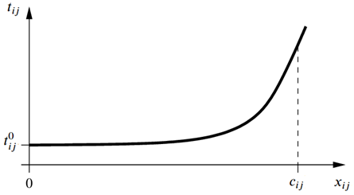
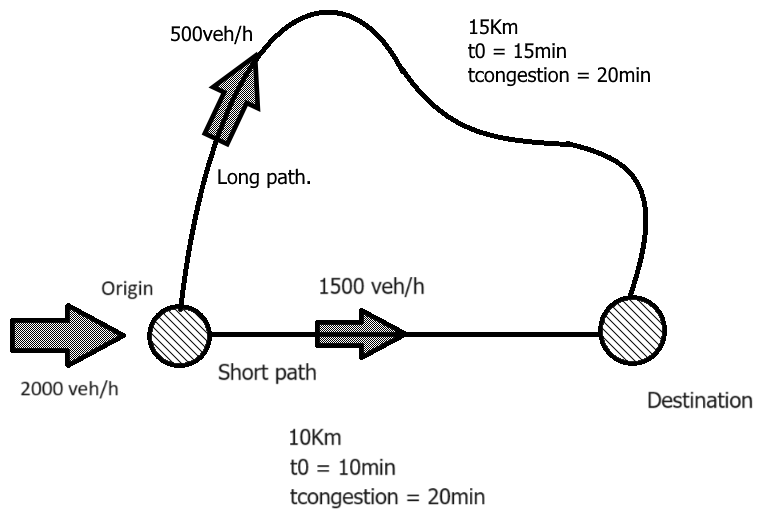
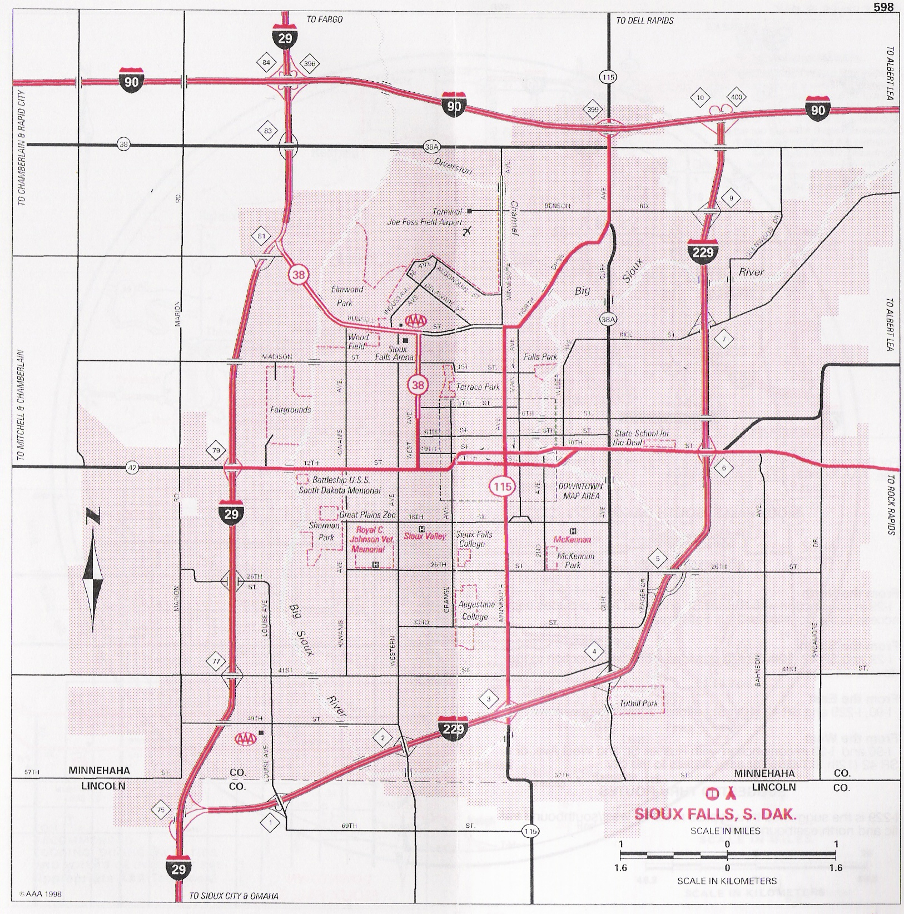
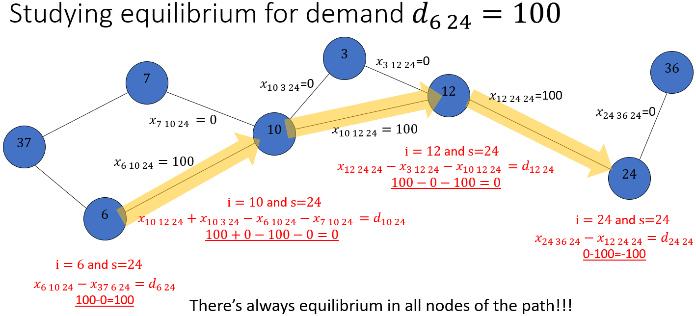
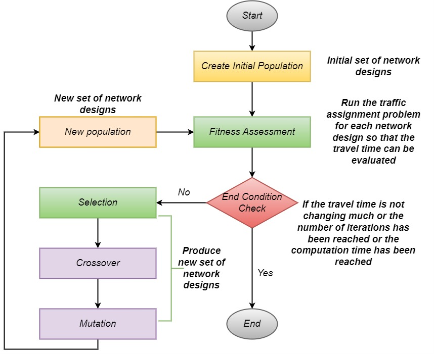

5.12. Road Network Design Problem#
During Friday’s session, you will work on the road Network Design Problem (NDP) and explore its implementation using two optimization approaches: Mixed-Integer Linear Programming (MILP) and a Genetic Algorithm (GA). The problem description, mathematical formulation, and Python implementation are provided in this book, should you wish to prepare in advance for the session.
MUDE Exam Information
The road Network Design Problem serves as an example for solving a complex optimization problem. You’re not expected to understand the problem details for the exam.
Problem description#
The road Network Design Problem (NDP) involves determining which road links to build, refurbish, or upgrade to improve the performance of a road network. A specific variation of the problem is the road NDP with capacity expansions, where the objective is to decide which links should have their capacity increased. This is a complex problem that must take into account a variety of factors, including:
The current state of the road network
The projected future traffic demand
The budget available for improvements
The impacts of the adjustments (could be environmental, social, etc).
There are a variety of approaches to dealing with the road NDP with capacity expansions. One common approach is to use mathematical optimization models. In this assignment, we use a simplified example to show how optimization can be used to tackle road NDPs. Note that the classical approaches to dealing with road NDPs can be more complicated and will be covered in other courses in the TTE track of the Civil Engineering Master’s program.
In this assignment, the goal is to minimize the total travel time on the network by selecting a predefined number of links for capacity expansion (subject to the available budget). The following (main) assumptions and simplifications are made to make the problem solvable using methods and algorithms that you have learned so far.
1. Link travel time function#
The travel time on a stretch of road (i.e., a link) depends on the flow of vehicles (vehicles/hour) on that link and the capacity of the link (maximum of vehicles/hour). The most common function to calculate travel time on a link is the so-called Bureau of Public Roads (BPR) function, which is a polynomial (degree 4) function. That function, if used in the assignment, would make the problem non-linear and therefore very hard to solve. So we use a simplified linear function where travel time increases linearly with the flow of vehicles on a road link. More details are provided within the formulation section.
{kind=link}

Fig. 5.33 Link travel time function#
\({t_{ij}} = t_{ij}^0\left( {1 + \alpha {{\left( {\cfrac{x_{ij}}{c_{ij}}} \right)}^\beta }} \right) \quad \left( {i,j} \right) \in A\)
Where \(t_{ij}\) is the current travel time on the link, \(t_{ij}^0\) is the travel time without congestion (free flow), \(x_{ij}\) is the flow of cars, and \(c_{ij}\) the capacity in maximum flow of cars. \(\alpha\) and \(\beta\) are calibration parameters that should be adapted to the reality of the region in which the model is being run. However, typically \(\alpha\) is \(1\), and \(\beta\) is \(4\).
2. Route choice behavior#
To assess the quality of solutions for the road capacity expansion problem, it is essential to understand the effect of added capacity on travel time. This requires not only modeling the travel time-flow relationship but also knowing how vehicles distribute themselves across the network.
In congested networks, the route choice behavior of drivers often follows the so-called User Equilibrium (UE) principle. Under UE, each traveler seeks to minimize their own individual generalized travel time. The principle states that, for each origin-destination pair, all routes used have equal and minimal travel times. In this state of equilibrium, no driver can improve their travel time by switching to a different route.
However, calculating UE requires advanced methods, which are beyond the scope of the MUDE course. Instead, we assume that drivers follow the so-called System Optimal (SO) principle. Under SO, route choices are made to minimize the total travel time across the entire network, summed over all drivers. This means some drivers may take longer routes to allow others to save time, a concept also referred to as social equilibrium.
The SO equilibrium is easier to compute than the UE. However, it is important to note that achieving a system-optimal traffic distribution in real-world road networks is nearly impossible, as drivers independently make route choices based on personal preferences and information. In practice, it is not feasible to dictate where drivers should go.
Example of a perfect user equilibrium in a very simple road:
{kind=link}

Fig. 5.34 Route choice behavior according to the user equilibrium (UE) principle#
3. Quadratic terms#
In the formulation of the Road NDP, even after applying the simplifications mentioned earlier, a quadratic term arises. Specifically, the flow (a variable) must be multiplied by the travel time (also a variable), making the problem non-linear.
Fortunately there are different methods to transform quadratic terms to linear variables and constraints with mathematical programming. You do not need to learn these techniques. Most solvers (including Gurobi) can handle this well given some adjustments to the formulation. Gurobi uses the McCormick Envelopes (MCE) to transform each quadratic term into one new variable and four constraints. For more information on MCE and how Gurobi implements them, check these links (but this is not part of your learning goals):
In this assignment, we will proceed with a quadratic term in the objective function. With the earlier simplifications and assumptions, we can formulate and solve the road NDP using the branch-and-bound method, which you have studied before.
We are using the Sioux Falls network which is one of the most used networks in transportation research
{kind=link}

Fig. 5.35 SiouxFalls map#
Mathematical description#
Decision variables#
We have a set of binary variables \(y_{ij}\), these variables take the value 1 if link \((i,j)\) connecting node \(i\) to node \(j\) is selected for expansion, and 0 otherwise.
We also have two sets of decision variables representing link flows; \(x_{ij}\), representing flow on link \((i,j)\) in cars per hour, and \(x_{ijs}\), representing flow on link \((i,j)\) going to destination \(s\).The first represents the total number of cars passing on that road, while the second represents the number of cars specifically going to destination \(s\). Summing the latter over all \(s\) results in the former for a link \((i,j)\).
Therefore, mathematically we define the domain of the variables as follows:
As you will see in the code implementation, we have one extra set of variables called x2 (representing \(x^2\)). This is to help Gurobi isolate quadratic terms and perform required transformations based on MCE to keep the problem linear. This is not part of your learning goals.
Objective function#
The objective function of the problem (in its simplest form), is the minimization of the total travel time on the network. This is calculated by multiplying the flow of vehicles on each link by the corresponding travel time and summing over all links (\(A\) represents the collection of all links to simplify the notation):
The travel time \(t_{ij}\) is a function of the flow on a link and can be expressed as follows (where \(\beta\) is a parameter):
Note that the commonly used travel time function based on the Bureau of Public Roads (BPR) is as follows:
\[ t_{ij} = t^0_{ij} \cdot \left( 1 + \alpha \left (\cfrac{x_{ij}}{c_{ij}}\right)^\beta\right) \quad \forall (i,j) \in A \]Where \(\beta\) usually assumes the value of \(4\) making this function (and the problem) non-linear. Therefore, we use the linear function mentioned before to make the problem manageable using the methods we have learned so far.
The following constraint yields the capacity of each link based on which ones are selected for expansion, when \(y_{ij}\) is 1 there is added capacity as you can see:
This allows us to represent \(t_{ij}\) as:
Which leads to the following extended objective function:
Now, for Gurobi (and other solvers as well), it is necessary to keep binary variables and quadratic terms clean and separate for the solver to perform the required transformations to linearize the problem. Thus, the following, despite its complexity, is the most solver-friendly formulation of our objective function:
Therefore, we use this equation to model our objective function in Gurobi.
Constraints#
We have four sets of constraints for this problem. Let’s go through them one by one and add them to the model.
1. Budget constraint#
We can only extend the capacity of certain number of links based on the available budget. So first, we have to make sure to limit the number of extended links to the max number that can be expanded:
2. Link flow conservation constraints#
We have two sets of decision variables representing link flows; \(x_{ij}\), which represents the total flow on link \((i,j)\), and \(x_{ijs}\), which represents flow on link \((i,j)\) going to destination \(s\). So we have to make sure that the sum of the flows over all destinations equals the flow on each link.
3. Node flow conservation constraints#
This set of constraints ensures that the total incoming and outgoing flow at each node balances, except at origin and destination nodes where flow is either generated or absorbed. For example, at an intersection, the number of vehicles entering equals the number leaving, except for origins (extra outgoing flow) and destinations (extra incoming flow).
\(d_{is}\) here is the number of travelers from node \(i\) to node \(s\) with the exception of \(d_{ss}\), which is all the demand that arrives at node \(s\).
The figure gives an example:
{kind=link}

Fig. 5.36 Constraint example#
4. Quadratic variable constraints (you do not need to fully understand this)#
These constraints are essentially dummy equations to help Gurobi handle the quadratic terms (introduced earlier as dummy variables). Instead of directly using \(x^2_{ij}\) in the model, we define a new set of decision variables and constraints to represent their values. This informs Gurobi that these are quadratic terms and allows it to replace them with the necessary variables and constraints to maintain linearity. This is not part of your learning goals!
Conclusions#
Here is the complete problem formulation.
Adaption for GA#
To be able to use a Genetic Algorithm (GA), we need to define the problem slightly differently. Essentially, we break down the problem into two sub-problems:
The Traffic Assignment (TA) problem: the route choices of the drivers.
The road Network Design Problem (NDP): where we select which links should be upgraded.
We solve the problem by iteratively going between the Traffic assignment and the Design Problem. The idea is for the GA to move to better networks as generations pass which are evaluated by the traffic assignment process that you have learned. We use Gurobi to solve the Traffic Assignment sub-problems, which provide us with the objective function (or fitness function within the context of GA) value of the decision problem (which will be dealt with using GA). This is usually referred to as the iterative-optimization-assignment method since we iteratively improve the objective function value of the NDP using the assignment problem.
Let’s see how this works.
The Network Design sub-problem#
The network design is where we use the genetic algorithm. As explained before, GA uses a population of solutions and iteratively improves this population to evolve to new generations of populations with a better objective function value (being that minimization or maximization). In this problem, the decision variables are links for capacity expansion and the objective function value is the total system travel time that we want to minimize.
Where the values of \(x_{ij}\) are not decision variables anymore, they will be obtained from solving the Traffic Assignment problem with Gurobi which evaluates the travel times on the network.
The Traffic Assignment sub-problem#
This is just part of the original NDP that assigns traffic to the network based on a set of given capacity values, which are defined based on the values of the DP decision variables (links selected for capacity expansion). The main difference (and the advantage) here is that by separating the binary decision variables, instead of a mixed integer programming problem, which are hard to solve, here we have a quadratic programming problem with continuous decision variables, which will be transformed to a linear problem that Gurobi can solve very fast.
Where the values of \(y_{ij}\) are constant and are defined by GA.
Summarizing#
The following is a diagram that shows what you are finally doing to solve the same problem but with a meta-heuristic approach:
{kind=link}

Fig. 5.37 Summary meta-heurstic approach#
PyMOO#
PyMOO is a Python library that provides a comprehensive and easy-to-use framework for multi-objective optimization (MOO). For this case, we are going to deal with only one objective; nevertheless, this is a useful tool if you have more objectives. In addition, PyMOO easily allows us to define our optimization problem by specifying the objectives, constraints, and decision variables.
Implementation in Python#
The implementation in Python is shown in the notebooks for MILP and GA. The full notebooks including source data are provided here
We can now start solving our problem!

Fig. 5.38 A solution of the problem#